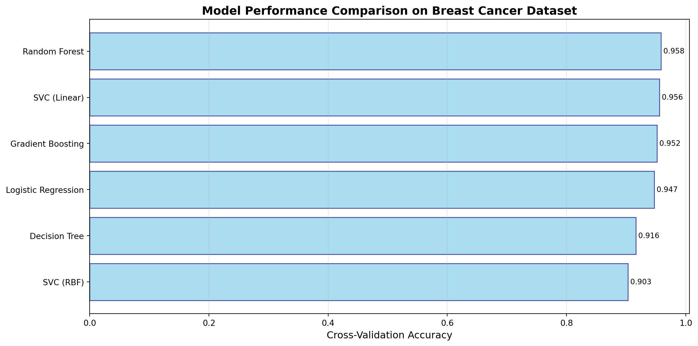
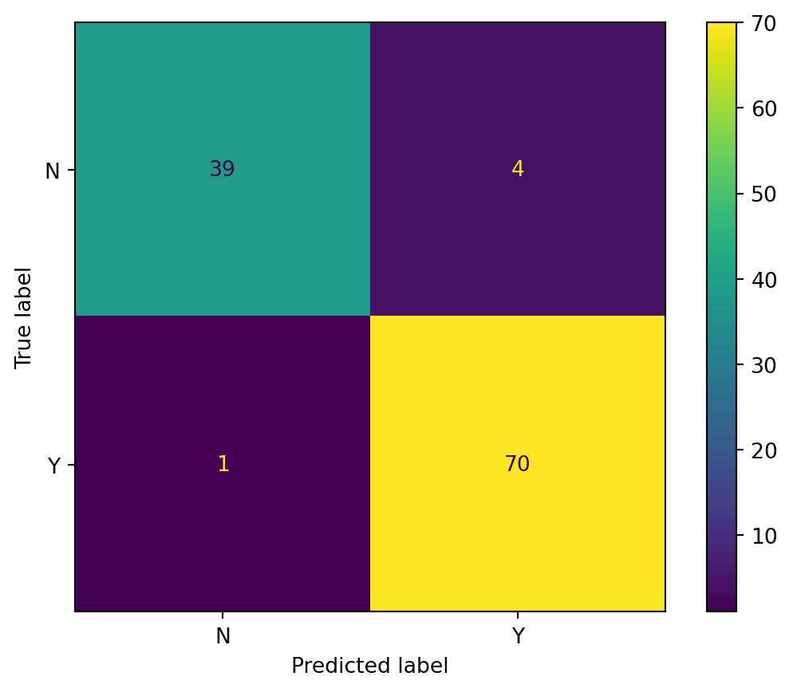
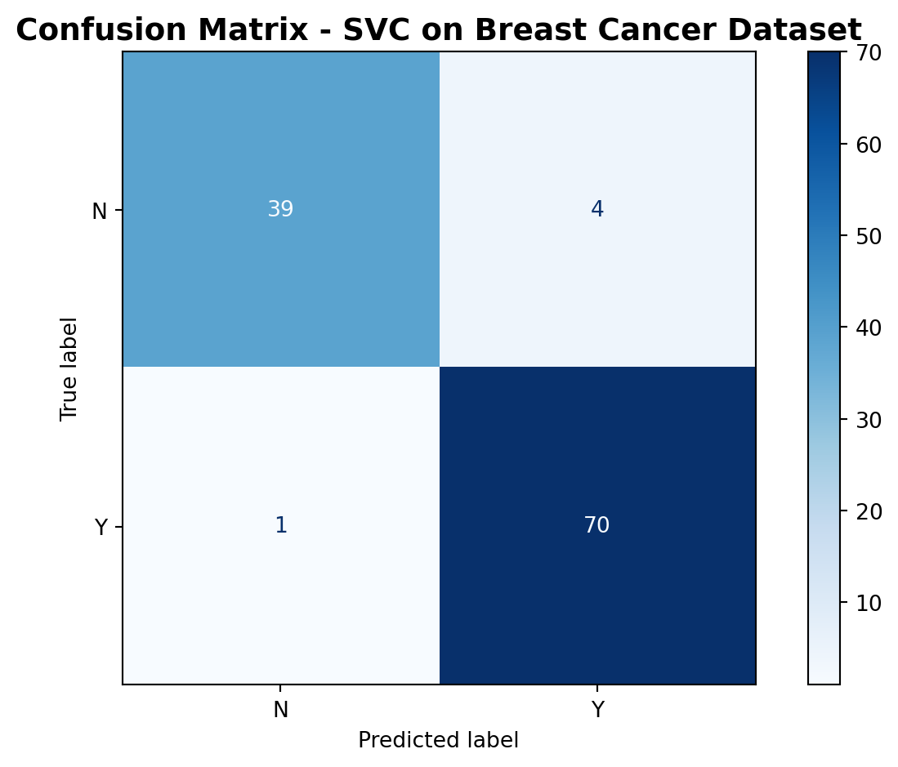

This tutorial demonstrates all functions in the model-auto-interpret package with complete, runnable examples using real datasets.
Setup and Data Loading
# Import all necessary librariesimport numpy as npimport pandas as pdimport matplotlib.pyplot as pltfrom sklearn.datasets import load_breast_cancerfrom sklearn.model_selection import train_test_split, GridSearchCV, RandomizedSearchCVfrom sklearn.svm import SVCfrom sklearn.ensemble import RandomForestClassifier, GradientBoostingClassifierfrom sklearn.linear_model import LogisticRegressionfrom sklearn.tree import DecisionTreeClassifierfrom scipy.stats import uniform, randint# Import our package functionsfrom model_auto_interpret import ( param_tuning_summary, model_cv_metric_compare, model_evaluation_plotting)# Load the Breast Cancer dataset (binary classification)cancer = load_breast_cancer()X_data = pd.DataFrame(cancer.data, columns=cancer.feature_names)y_data = pd.Series(cancer.target)# Convert to "Y"/"N" labels as required by the packagey_data = y_data.map({1: 'Y', 0: 'N'})# Split into train/testX_train, X_test, y_train, y_test = train_test_split( X_data, y_data, test_size=0.2, random_state=42)print(f"Dataset shape: {X_train.shape}")print(f"Classes: {np.unique(y_data)}")print(f"Class distribution:\n{y_train.value_counts()}")
Dataset shape: (455, 30)
Classes: ['N' 'Y']
Class distribution:
Y 286
N 169
Name: count, dtype: int64
Function 1: param_tuning_summary()
Purpose
This function helps you extract and summarize the results from scikit-learn’s GridSearchCV or RandomizedSearchCV, making it easy to see which hyperparameters performed best.
Example 1.1: GridSearchCV with SVC
# Define parameter grid to searchparam_grid = {'C': [0.1, 1, 10, 100],'kernel': ['rbf', 'linear'],'gamma': ['scale', 'auto']}# Create and fit GridSearchCVgrid_search = GridSearchCV( SVC(random_state=42), param_grid, cv=5, scoring='accuracy', verbose=0)print("Performing grid search...")grid_search.fit(X_train, y_train)# Use our function to get a summarysummary_df, best_estimator = param_tuning_summary(grid_search)print("\n=== Best Hyperparameters Summary ===")print(summary_df)print(f"\nBest Model: {best_estimator}")print(f"Best Cross-Validation Score: {summary_df['Best_Score'].iloc[0]:.4f}")
Performing grid search...
=== Best Hyperparameters Summary ===
Parameter Value Best_Score
0 C 100 0.971429
1 gamma scale 0.971429
2 kernel linear 0.971429
Best Model: SVC(C=100, kernel='linear', random_state=42)
Best Cross-Validation Score: 0.9714
Example 1.2: RandomizedSearchCV with Random Forest
# Define parameter distributions for randomized searchparam_distributions = {'n_estimators': randint(50, 200),'max_depth': randint(3, 20),'min_samples_split': randint(2, 15),'min_samples_leaf': randint(1, 10)}# Create and fit RandomizedSearchCVrandom_search = RandomizedSearchCV( RandomForestClassifier(random_state=42), param_distributions, n_iter=20, # Number of parameter settings to sample cv=5, scoring='accuracy', random_state=42, verbose=0)print("\nPerforming randomized search...")random_search.fit(X_train, y_train)# Get summaryrf_summary, rf_best_model = param_tuning_summary(random_search)print("\n=== Random Forest Best Parameters ===")print(rf_summary)
Performing randomized search...
=== Random Forest Best Parameters ===
Parameter Value Best_Score
0 max_depth 18 0.956044
1 min_samples_leaf 2 0.956044
2 min_samples_split 6 0.956044
3 n_estimators 73 0.956044
Key Outputs
summary_df: DataFrame with parameter names, values, and best score
best_estimator: The fitted model with optimal parameters
Function 2: model_cv_metric_compare()
Purpose
Compare multiple models using cross-validation to find which performs best on your dataset.
Example 2.1: Basic Model Comparison
# Define multiple models to comparemodels = {'Logistic Regression': LogisticRegression(max_iter=1000, random_state=42),'SVC (RBF)': SVC(kernel='rbf', random_state=42, probability=True),'SVC (Linear)': SVC(kernel='linear', random_state=42, probability=True),'Random Forest': RandomForestClassifier(n_estimators=100, random_state=42),'Decision Tree': DecisionTreeClassifier(random_state=42),'Gradient Boosting': GradientBoostingClassifier(random_state=42)}# Compare all models using cross-validationprint("\nComparing models with 5-fold cross-validation...")comparison_df = model_cv_metric_compare(models, X_train, y_train, cv=5)print("\n=== Model Comparison Results ===")print(comparison_df.sort_values('accuracy', ascending=False))
Comparing models with 5-fold cross-validation...
/opt/hostedtoolcache/Python/3.11.14/x64/lib/python3.11/site-packages/sklearn/linear_model/_logistic.py:406: ConvergenceWarning: lbfgs failed to converge after 1000 iteration(s) (status=1):
STOP: TOTAL NO. OF ITERATIONS REACHED LIMIT
Increase the number of iterations to improve the convergence (max_iter=1000).
You might also want to scale the data as shown in:
https://scikit-learn.org/stable/modules/preprocessing.html
Please also refer to the documentation for alternative solver options:
https://scikit-learn.org/stable/modules/linear_model.html#logistic-regression
n_iter_i = _check_optimize_result(
/opt/hostedtoolcache/Python/3.11.14/x64/lib/python3.11/site-packages/sklearn/linear_model/_logistic.py:406: ConvergenceWarning: lbfgs failed to converge after 1000 iteration(s) (status=1):
STOP: TOTAL NO. OF ITERATIONS REACHED LIMIT
Increase the number of iterations to improve the convergence (max_iter=1000).
You might also want to scale the data as shown in:
https://scikit-learn.org/stable/modules/preprocessing.html
Please also refer to the documentation for alternative solver options:
https://scikit-learn.org/stable/modules/linear_model.html#logistic-regression
n_iter_i = _check_optimize_result(
/opt/hostedtoolcache/Python/3.11.14/x64/lib/python3.11/site-packages/sklearn/linear_model/_logistic.py:406: ConvergenceWarning: lbfgs failed to converge after 1000 iteration(s) (status=1):
STOP: TOTAL NO. OF ITERATIONS REACHED LIMIT
Increase the number of iterations to improve the convergence (max_iter=1000).
You might also want to scale the data as shown in:
https://scikit-learn.org/stable/modules/preprocessing.html
Please also refer to the documentation for alternative solver options:
https://scikit-learn.org/stable/modules/linear_model.html#logistic-regression
n_iter_i = _check_optimize_result(
/opt/hostedtoolcache/Python/3.11.14/x64/lib/python3.11/site-packages/sklearn/linear_model/_logistic.py:406: ConvergenceWarning: lbfgs failed to converge after 1000 iteration(s) (status=1):
STOP: TOTAL NO. OF ITERATIONS REACHED LIMIT
Increase the number of iterations to improve the convergence (max_iter=1000).
You might also want to scale the data as shown in:
https://scikit-learn.org/stable/modules/preprocessing.html
Please also refer to the documentation for alternative solver options:
https://scikit-learn.org/stable/modules/linear_model.html#logistic-regression
n_iter_i = _check_optimize_result(
/opt/hostedtoolcache/Python/3.11.14/x64/lib/python3.11/site-packages/sklearn/linear_model/_logistic.py:406: ConvergenceWarning: lbfgs failed to converge after 1000 iteration(s) (status=1):
STOP: TOTAL NO. OF ITERATIONS REACHED LIMIT
Increase the number of iterations to improve the convergence (max_iter=1000).
You might also want to scale the data as shown in:
https://scikit-learn.org/stable/modules/preprocessing.html
Please also refer to the documentation for alternative solver options:
https://scikit-learn.org/stable/modules/linear_model.html#logistic-regression
n_iter_i = _check_optimize_result(
# Create a visualization of model performancefig, ax = plt.subplots(figsize=(12, 6))# Sort by accuracycomparison_sorted = comparison_df.sort_values('accuracy', ascending=True)# Create horizontal bar ploty_pos = np.arange(len(comparison_sorted))ax.barh(y_pos, comparison_sorted['accuracy'], align='center', alpha=0.7, color='skyblue', edgecolor='navy')# Customize plotax.set_yticks(y_pos)ax.set_yticklabels(comparison_sorted.index)ax.set_xlabel('Cross-Validation Accuracy', fontsize=12)ax.set_title('Model Performance Comparison on Breast Cancer Dataset', fontsize=14, fontweight='bold')ax.grid(axis='x', alpha=0.3)# Add value labelsfor i, score inenumerate(comparison_sorted['accuracy']): ax.text(score, i, f' {score:.3f}', va='center', fontsize=9)plt.tight_layout()plt.show()print(f"\nBest Model: {comparison_df['accuracy'].idxmax()}")print(f"Best Accuracy: {comparison_df['accuracy'].max():.4f}")

Figure 1: Model performance comparison on breast cancer dataset
Best Model: Random Forest
Best Accuracy: 0.9582
Example 2.3: Examining All Metrics
# Display all metrics for better comparisonprint("\n=== Detailed Metrics for All Models ===")print(comparison_df.round(4))# Compare specific metricsprint("\n=== F1 Scores ===")print(comparison_df[['f1']].sort_values('f1', ascending=False))
=== Detailed Metrics for All Models ===
accuracy precision recall f1 roc_auc
Model
Logistic Regression 0.9473 0.9496 0.9686 0.9585 0.9897
SVC (RBF) 0.9033 0.8827 0.9790 0.9278 0.9686
SVC (Linear) 0.9560 0.9561 0.9756 0.9655 0.9901
Random Forest 0.9582 0.9594 0.9754 0.9671 0.9878
Decision Tree 0.9165 0.9423 0.9266 0.9332 0.9131
Gradient Boosting 0.9516 0.9559 0.9685 0.9619 0.9891
=== F1 Scores ===
f1
Model
Random Forest 0.967129
SVC (Linear) 0.965453
Gradient Boosting 0.961942
Logistic Regression 0.958489
Decision Tree 0.933165
SVC (RBF) 0.927768
Function 3: model_evaluation_plotting()
Purpose
Evaluate a fitted model on test data and generate comprehensive metrics plus confusion matrix visualizations.
Example 3.1: Evaluate Best Model
# Use the best estimator from grid searchbest_model = best_estimator# Evaluate on test setaccuracy, f2, y_pred, cm_table, cm_display = model_evaluation_plotting( best_model, X_test, y_test)print("\n=== Evaluation Results ===")print(f"Accuracy: {accuracy:.4f}")print(f"F2 Score: {f2:.4f}")print("\n=== Confusion Matrix Table ===")print(cm_table)print(f"\n=== Number of Predictions ===")print(f"Total predictions: {len(y_pred)}")print(f"Predictions distribution:\n{pd.Series(y_pred).value_counts()}")
=== Evaluation Results ===
Accuracy: 0.9561
F2 Score: 0.9777
=== Confusion Matrix Table ===
col_0 N Y
row_0
N 39 4
Y 1 70
=== Number of Predictions ===
Total predictions: 114
Predictions distribution:
Y 74
N 40
Name: count, dtype: int64

Example 3.2: Visualize Confusion Matrix
# Display the confusion matrixcm_display.plot(cmap='Blues')plt.title('Confusion Matrix - SVC on Breast Cancer Dataset', fontsize=14, fontweight='bold')plt.tight_layout()plt.show()

Figure 2: Confusion matrix for breast cancer classification
Example 3.3: Compare Multiple Models on Test Set
# Evaluate all models on test setprint("\n=== Test Set Performance Comparison ===")test_results = []for model_name, model in models.items():# Fit model model.fit(X_train, y_train)# Evaluate acc, f2_score, preds, _, _ = model_evaluation_plotting(model, X_test, y_test) test_results.append({'Model': model_name,'Test Accuracy': acc,'Test F2 Score': f2_score })test_df = pd.DataFrame(test_results).set_index('Model')test_df = test_df.sort_values('Test Accuracy', ascending=False)print(test_df.round(4))
=== Test Set Performance Comparison ===
/opt/hostedtoolcache/Python/3.11.14/x64/lib/python3.11/site-packages/sklearn/linear_model/_logistic.py:406: ConvergenceWarning: lbfgs failed to converge after 1000 iteration(s) (status=1):
STOP: TOTAL NO. OF ITERATIONS REACHED LIMIT
Increase the number of iterations to improve the convergence (max_iter=1000).
You might also want to scale the data as shown in:
https://scikit-learn.org/stable/modules/preprocessing.html
Please also refer to the documentation for alternative solver options:
https://scikit-learn.org/stable/modules/linear_model.html#logistic-regression
n_iter_i = _check_optimize_result(
Test Accuracy Test F2 Score
Model
Random Forest 0.9649 0.9804
Logistic Regression 0.9561 0.9777
Gradient Boosting 0.9561 0.9691
SVC (Linear) 0.9561 0.9777
SVC (RBF) 0.9474 0.9834
Decision Tree 0.9474 0.9577